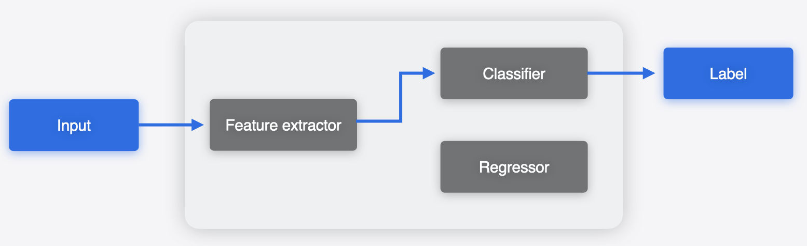
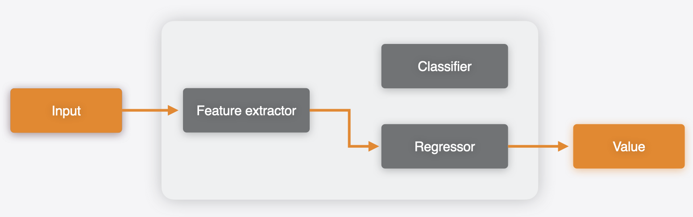
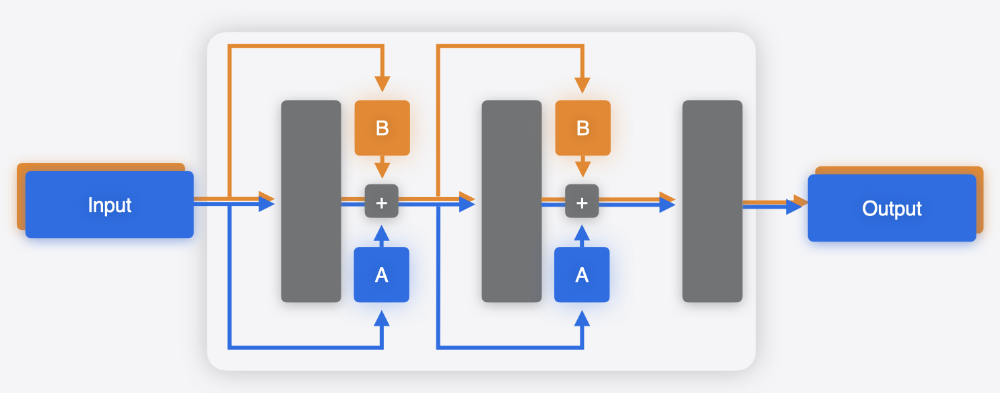

Multifunction Models#
An mlprogram Core ML model typically contains a single function, called main.
This is the default form in which a model is constructed, such as when it’s produced via
the conversion process. Starting with iOS18/macOS15, you can produce an mlprogram
with multiple functions in it.
Each function, indexed by its unique name, can then be independently loaded and invoked for inference.
Consider a scenario, where you have separate models that share weights and run in the same app. For example, as illustrated in the following figure, one model may have a feature extractor, followed by a classifier to produce a classification output. Another model may use the same feature extractor, followed by a regressor to produce the regression output.


Using Core ML Tools, you can merge these models to produce a
single .mlpackage asset, with multiple functions,
such that the common weights (feature extractor in this case) are shared between those.
During the process of merging, Core ML Tools deduplicates shared weights by
calculating the hash of the weight values.
The merged multifunction model can do both tasks based on the function chosen to run.

Why Combine Models?#
In the example above, the two models used a common backbone. While utilizing multifunctions and producing a single model asset is definitely beneficial, there does exist a reasonable workaround in this case: simply breaking up the models into three submodels: backbone, classifier head, and regressor head, and then using two of them in sequence based on the use case.
However, there are scenarios when such a workaround would not be available. An example of this is the case of parameter-efficient fine-tuning (PEFT), which is a common approach for specializing large models to particular tasks. In the case of PEFT, “adapters” are attached to the base model, typically at multiple points within the network, as shown in the figures below. Only the parameters in these adapters are fine-tuned for a specific task. This is much more efficient than fine-tuning the whole base model, which has many more parameters.
{kind=link}
{kind=link}
In this case, you can use a multifunction model to capture the multiple variations in a single model. A separate function could be defined for each adapter. The weights for the base model will be shared.

For an example, see the “Deploy machine learning and AI models on-device with Core ML” session video in WWDC 2024 to learn more about integrating multifunction models into your app. It includes a text-to-image example, in which a single model with multiple adapters is used to generate images with different styles.
Combining models: toy example with LoRA adapters#
In this example, learn how to combine a base model and adapter model to create a merged multifunction Core ML model, load it, and get predictions.
First, define a base model with two linear layers.
import torch # torch==2.3.0
import torch.nn as nn
class Base(nn.Module):
def __init__(self):
super(Base, self).__init__()
self.linear1 = nn.Linear(6000, 6000)
self.relu = nn.ReLU()
self.linear2 = nn.Linear(6000, 6000)
def forward(self, x):
x = self.linear1(x)
x = self.relu(x)
x = self.linear2(x)
return x
base_model = Base()
Update the model by first attaching one of the most common type of adapters to it,
LoRA (low rank approximation), and then
converting it using the HuggingFace peft
package.
from peft import get_peft_model, LoraConfig # peft==0.11.1
def adapt_model_with_lora(model):
lora_config = LoraConfig(target_modules=["linear1", "linear2"], r=32, lora_alpha=1) # rank 32
adapted_model = get_peft_model(model, lora_config)
return adapted_model
adapted_model_1 = adapt_model_with_lora(base_model)
At this stage, you would typically fine-tune the model. Since this is an illustrative example, you can skip that step and go directly to the next stage of converting the model.
import coremltools as ct
mlmodel_1 = ct.convert(torch.jit.trace(adapted_model_1.eval(), torch.rand(1, 6000)),
inputs=[ct.TensorType(name="input_adpated_model_1", shape=(1, 6000))],
outputs=[ct.TensorType(name="out_adpated_model_1")],
minimum_deployment_target=ct.target.iOS18,
)
mlmodel_1.save("adapted_model_1.mlpackage")
Create a different adapter model, which you would fine-tune to a different task in practice.
adapted_model_2 = adapt_model_with_lora(base_model)
mlmodel_2 = ct.convert(torch.jit.trace(adapted_model_2.eval(), torch.rand(1, 6000)),
inputs=[ct.TensorType(name="input_adpated_model_2", shape=(1, 6000))],
outputs=[ct.TensorType(name="out_adpated_model_2")],
minimum_deployment_target=ct.target.iOS18,
)
mlmodel_2.save("adapted_model_2.mlpackage")
To deploy both these variants of models in a single app, combine them into a single model.
Create a MultiFunctionDescriptor to specify which models to merge and what the new function name
will be in the merged model. You can then use the save_multifunction
utility to produce a merged multifunction Core ML model.
desc = ct.utils.MultiFunctionDescriptor()
desc.add_function(
"adapted_model_1.mlpackage",
src_function_name="main",
target_function_name="adapter_1"
)
desc.add_function(
"adapted_model_2.mlpackage",
src_function_name="main",
target_function_name="adapter_2"
)
desc.default_function_name = "adapter_1"
ct.utils.save_multifunction(desc, "combined_adpater_models.mlpackage")
When loading the multifunction model, you can specify the
function_name to load the specific function and then do the prediction.
import numpy as np
mlmodel_1 = ct.models.MLModel("combined_adpater_models.mlpackage") # Uses default function
y_1 = mlmodel_1.predict({'input_adpated_model_1': np.random.rand(1, 6000)})
mlmodel_2 = ct.models.MLModel("combined_adpater_models.mlpackage", function_name="adapter_2")
y_2 = mlmodel_2.predict({'input_adpated_model_2': np.random.rand(1, 6000)})
The number of parameters in the base model are roughly 72M (6000x6000 = 36M for each of the two linear layers), ignoring the bias vectors. The LoRA adapters used here, of rank 32, will attach two linear layers of shapes, (6000, 32) and (32, 6000), to each of the linear modules in the base model. This will result in 4x6000x32 = 0.768M parameters to be added, which is a fraction of the base model. The combined model will share the 72M parameters of the base model and only have the additional adapter parameters. You can see this in the model sizes:
{kind=link}
This is how the model interface for a multifunction model would show up in the Xcode predictions tab:
{kind=link}
{kind=link}
Note
The multifunction model feature is available starting with
iOS18/macOS15 for the mlprogram model type.
Tip:
You can specify the function_name argument when loading a
CompiledMLModel
as well.